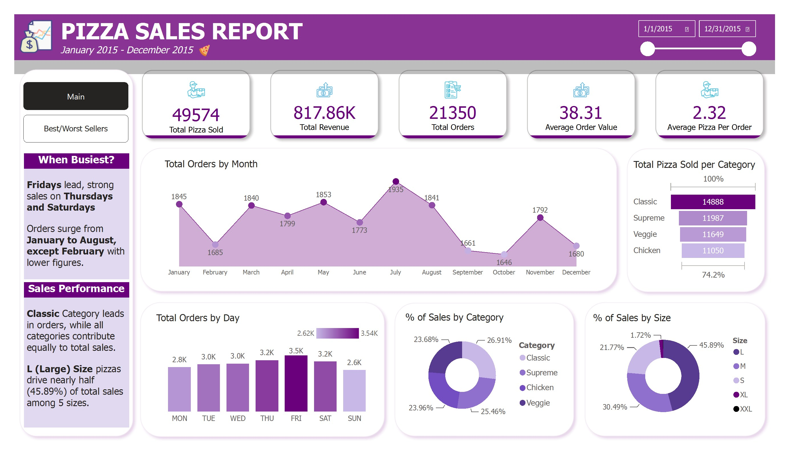
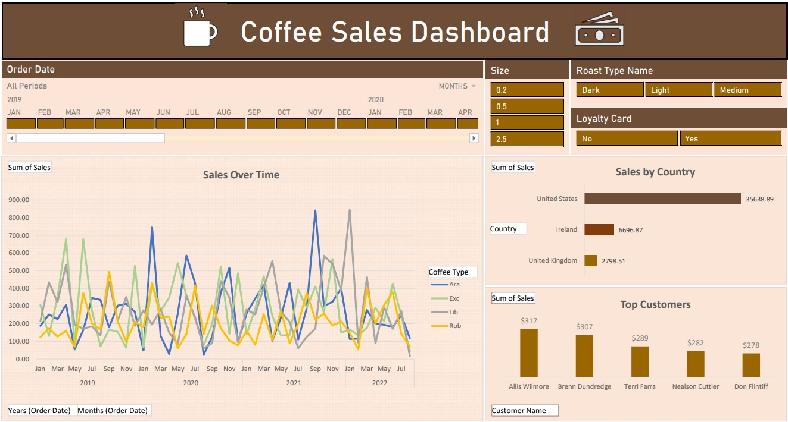
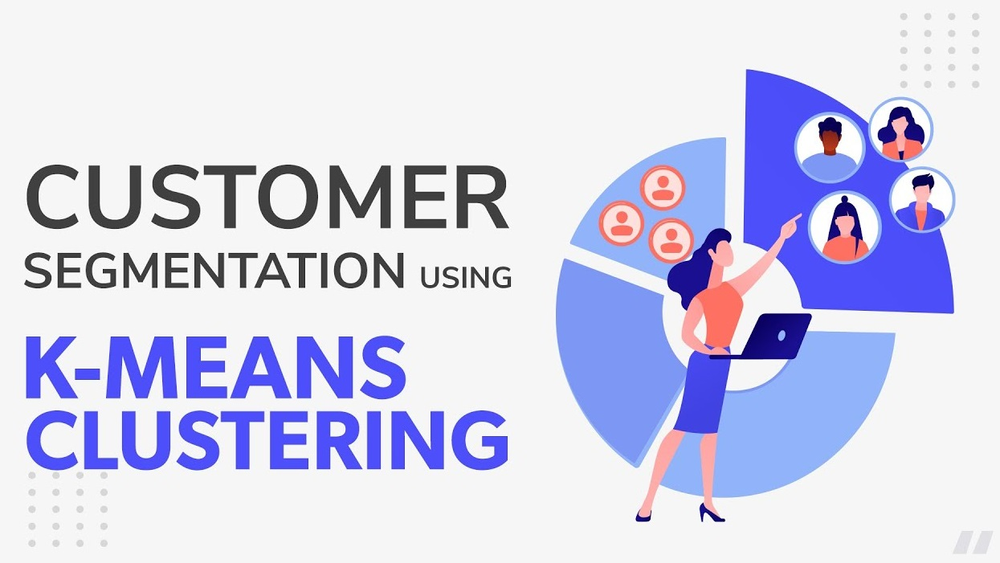

DHAKA, BANGLADESH · A MULTIDISCIPLINARY PERSPECTIVE
Hi, I’m Fardin Islam Mahin.
ENGINEERING CLARITY.
CONNECTING THE DOTS.
Engineering graduate with experience in business analysis, supply chain, and data-driven problem-solving. Exploring practical ways to make business workflows more efficient through analytics and responsible AI.
INDUSTRIAL ENGINEERING✳BUSINESS ANALYSIS✳SUPPLY CHAIN✳DATA & AI
FARDIN ISLAM MAHIN 23.81° N · 90.41° E
01 / A LITTLE ABOUT ME
An engineer’s mindset.
A bigger-picture view.
I'm an Industrial & Production Engineering graduate from MIST, trained to see the bigger picture: how people, processes, technology, and information work together to make an organization function. My engineering foundation taught me to look beyond individual tasks and understand the systems connecting them like where inefficiencies emerge, why bottlenecks happen, and how things can work better.
Through my experiences in supply chain management and business analysis, I've developed a practical understanding of how operational processes, data, and everyday business decisions intersect.
My focus is on Applied AI for Business Workflows & Growth Operations. I'm exploring how AI, analytics, and systems thinking can come together to simplify workflows, improve operational efficiency, and support better business decisions. I'm particularly interested in approaches that are practical, measurable, and reliable, not adopting technology simply because it's new.
My guiding question remains the same one that drew me toward industrial engineering: How can we make the whole system work better?
B.Sc. in IPEMIST · Class of 2025
Strong CommunicatorEnglish · Bangla (native)
02 / WHERE I’VE CONTRIBUTED
Experience in context.
Different industries.
A shared focus on better information.
Basumati Construction
Senior Executive, Business Analyst
Chevron
Supply Chain Management Intern
KSRM
Trainee, Industrial Attachment
03 / SELECTED PROJECTS
From raw data
to a clearer picture.

Explore project ↗01 · POSTGRESQL / POWER BI
Pizza Sales KPIs,
Trends & Insights
Turning transaction data into a view of revenue, order volume, product performance and sales trends.
View on GitHub ↗
Explore project ↗02 · MICROSOFT EXCEL
Coffee Sales
Dashboard
Cleaning customer and sales data with XLOOKUP and INDEX-MATCH, then exploring trends with PivotTables, slicers and timelines.
View on GitHub ↗
Explore project ↗03 · PYTHON / PANDAS / SCIKIT-LEARN
Understanding
customer segments.
Applying RFM analysis and K-Means clustering to purchasing behavior, with feature scaling and the elbow method.
View on GitHub ↗Showing all 3 projects.
04 / MY TOOLKIT
Practical skills.
Connected thinking.
Analytics & BI
Excel · SQL · Power BI · Python · Pandas · scikit-learn · Matplotlib · Seaborn
Supply chain & Operations
Process improvement · Procurement cost analysis · P2P Cycle · Inventory analysis · Contract evaluation · KPI monitoring
Systems & Collaboration
Operational reporting and ERP · Microsoft Office · Google Workspace · Oracle JDE · GEP SMART
05 / BEYOND THE JOB TITLE
Making room
for others to grow.
As President of MIST Career Club in Spring 2024, I led EngiBiz’s first edition, helped students build data skills, and partnered with DataCamp Donates to expand access to learning.
I also served as Deputy Campus Director for Hult Prize at MIST, coordinating events and mentoring finalist teams.
350+EngiBiz participants from 20+ universities
30+Students in a four-session Excel data analysis course led by me
06 / CONTINUOUS LEARNING
Always building
on the foundation.
IELTS Academic Overall 8.0
with a perfect 9 in reading · October 2026
AI-Integrated Leadership ProgramAspire Institute · 2026
Procurement and Contract Negotiation in Supply Chain ↗Udemy · 2025Data Analyst ↗DataCamp · 2024IBM Data Analyst ↗Coursera · 2024Google Data Analytics ↗Coursera · 2023GOOD CONVERSATIONS START SOMEWHERE.
Let’s connect
the next dots.
Have a project, an opportunity, or a shared interest?
I’d be glad to hear from you.